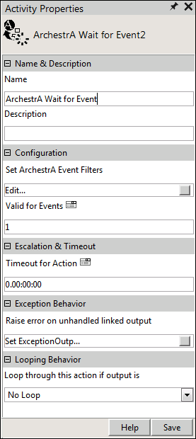

No
Activity Description
Use the ArchestrA Wait for Event activity to wait for a number of events from ArchestrA Event Services platform for a particular time period, and then consume the events in a defined workflow. You can set the number of events and the time period in the properties of that activity. It can store the event context details in the specified XML variables.
Activity Properties
Enter appropriate values in the Activity Properties area to configure the ArchestrA Wait for Event activity. Click the Activity Properties icon in the tool bar or select the appropriate option from the right-click menu for the activity.
The following image shows the Activity Properties window of the ArchestrA Wait for Event activity:

Name & Description
Use the name and description properties to specify the name and description for the activity.
Property Type: Mandatory.
Property Type: Optional. Set this property only if required.
Configuration
Use these properties to configure the functionality of the activity.
Property Type: Mandatory
For more information, see Set ArchestrA Event Filters.
Default Value: The default value is 0 which means that the Archestra Wait for Events activity waits for infinite occurrences of the events, and the workflow does not proceed to the next step in the flow. However, the workflow ends only if there is an exception in the workflow.
Property Type: Optional. Set this property only if required. If not set, the default value is considered.
Escalation & Timeout
Use this property to specify escalation and timeout settings for the activity.
Default Value: 0
Format: d.hh:mm:ss, where "d" denotes the number of days the schedule is set for, and the time setting denotes the number of hours, minutes, and seconds.
Property Type: Optional. Set this property only if required.
Exception Behavior
Each activity has the Raise error on unhandled linked output property. Click on this to see the default configured mapped error outputs in red with their check boxes selected.
See Mapped Error Output for more details.
Looping Behavior
Use this property to specify the looping behavior of the activity.